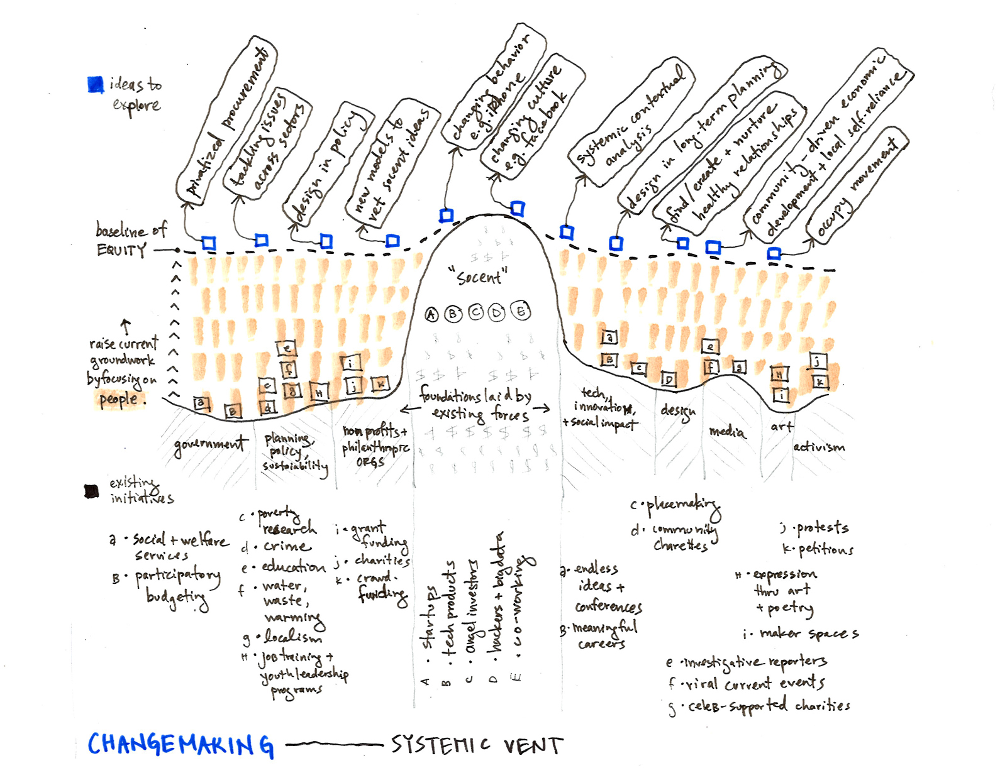

We consider ourselves here at RESUSstudio active participants in the social impact world, but there is never a straightforward answer to what "changemaking" really is. For true progress to occur, we think it's important to encourage this discussion.
- Which issues are often addressed? (poverty, corporate greed, human rights, transit ...)
- Who is seen as responsible for making change? (government, nonprofits, activists ...)
- What medium is used? (policy, technology, art, journalism, protest, capitalism ...)
- Which strategies are most effective?

People Profiles
We see this project taking various forms. First up: people profiles! We are having changemaking chats and starting local, in our homebase of Chicago.
No matter who you are or what you do, eventually it crosses all of our minds, even if for a second: "Why was I put on this earth, and how can I make the most of it?"
This question can be both motivating and frightening.
- Are we doing our part by raising a well-rounded child in a loving family?
- By regularly volunteering for a cause that interests you?
- By offering your skills to help tackle a social issue?
- Or simply by living your life as an upstanding citizen of the world?
We want to explore what changemaking means to different people from different backgrounds.
Here's our first installment: